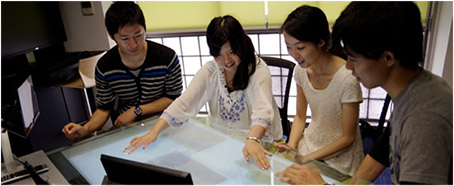

産学官連携による
AI・IoT・ ビッグデータ
人材育成プラットフォーム
大学と企業の連携を強化し、AI、IoT、ビッグデータ等を高度に駆使する人材の発掘・育成・活躍促進を通じて、実世界データの循環を推進し、新しい価値創造を目指します。
コンソーシアムの目的
産学官の連携による
AI･IoT･ビッグデータ関連人材育成
AI･IoT･ビッグデータ関連人材の発掘・育成・活躍促進は、我が国の企業及び大学等が協調して 取り組むべき事項であるとの認識の下、その関連知識、スキル、その活用方策の共有も視野に入れつつ、多様なステークホルダーの協働により、データ利活用社会の形成を目指します。
実世界データ循環の推進による
新しい価値創造
常に変化し捉えどころの無い｢受け手の望み｣ を絶え間なく汲み取り、「作り手の技術」をもって、「新しい製品･サービスの創造」に結びつける「実世界データ循環」のコンセプト及び知識･スキルを共有し、広めていくことで、新たな社会価値創造を目指します。
実世界データ循環の例
情報技術とビッグデータを駆使した新しい価値創造サイクル
(参考) 実世界データ循環の概念図
主な活動内容
AI･IoT･ビッグデータ関連
講座の企画･実施
D(データサイエンス)ブートキャンプ
高度な統計学や機械学習理論とスキルを体系立てて理解し、ビジネス課題に適用できる人材育成を目指します。
E(エンジニアリング)ブートキャンプ
Web開発で必ず使われるフレームワークを使ったプログラミングを、Ruby on Railsを使ったサンプルアプリケーションを開発しながら学習します。
インターンシップの企画･実施
常駐型インターン
期間中の課題を設定した上で、自社内で関係部署の社員とともにプロジェクトワークを実施します。
リモート型インターン
期間中の課題を設定した上で、課題データセットを提供し、遠隔でプロジェクトワークを実施します。
課題解決支援
院生･学生ベンチャーによる業務請負ものづくり系 / ヘルスケア系 / 流通系 / サービス系等、様々な分野･業種の企業に対し、AI･IoT･ビッグデータ関連のコンサルテーションを行います。
会員企業間、教授陣･研究者等とのビジネスマッチング支援
会員企業間マッチング
交流会やイベント、事務局からの紹介等を通じて会員企業同士やベンチャー群等とのビジネスマッチングの機会を創出します。
研究者マッチング
研究者データベースを活用し、会員企業のニーズに応じて、企業と研究者のマッチングを行います。
セミナー･シンポジウムの企画･実施
AI･IoT･ビッグデータ関連セミナー
実世界データ循環シンポジウム
受講学生の発掘･キャリア支援
受講学生の恒常的な募集
理工系人材が数多く在籍する大学のキャリアセンターと連携し、数学や統計学といったベーススキルを保有する学生を確保します。
受講学生のキャリア支援
様々な分野・業種における産業界等へのキャリア形成を支援します
メッセージ
運営体制
運営委員会メンバー
体制図
運営委員及び会員の有志
入会について
得られた産学官連携活動の成果や経験を財産として捉え、加盟いただいた皆様と共有させていただきます。
| 入会条件 |
1. 実世界データ循環コンソーシアムの趣旨にご賛同いてだいていること 2. 企業、大学、機関･団体等法人格を有していること 3. 実世界データ循環コンソーシアムにおける今後の活動に協働で参画いただけること |
| 会費 | 入会金や年会費は徴収いたしません。ただし、コンソーシアムの個別活動に参加する際に発生する諸経費(参加費用や交通費など)は自己負担となります。 |
| 申し込み方法 | 実世界データ循環コンソーシアムの趣旨にご賛同いただき参加ご希望の場合は、こちらの申込みフォームよりお申し込み手続きを進めてください。 |
| 問い合せ先 |
実世界データ循環コンソーシアム事務局 |
入会のメリット
| メリット | 内容 | |
|---|---|---|
| 人材確保 | インターン/バイト マッチング |
プログラムのPBLの受講生や、コンテスト参加者等にリーチし、インターンやバイトとして活用が可能になります。 |
| 正社員マッチング | プログラムのPBLの受講生や、コンテスト参加者等にリーチし、正社員として採用することも可能になります。 | |
| 人材確保 | 自社人材育成 | 自社の人材をプログラムを受講させ、高度データ関連人材として育成することが可能になります。 |
| 自社データ解析 (インターン活用) |
インターンを受け入れ、自社で保有するデータ解析を行い、課題解決することが可能になります。 | |
| 自社データ解析 (ベンチャー活用) |
コンソーシアム会員の学生ベンチャー等に課題データセットを提供し、課題解決を行うことが可能になります。 | |
| 最新情報入手 | 各種事例・講演情報収集 | 他社の先進的なデータ利活用事例や第一線で活躍する教授陣の講演等の情報をいち早く収集することが可能になります。 |
| ビジネスマッチング | プログラムを通じて、会員企業同士や教授陣・ベンチャー群とのビジネスマッチングを実現することが可能になります。 |
規約
第１条 （名称）
本コンソーシアムの名称は「実世界データ循環コンソーシアム （英文名：Real World Data Circulation Consortium）（以下「本会」という。）」とする。
第２条 （目的）
本会は、大学・企業の連携を強化し、AI、IoT、ビッグデータ等を高度に駆使する人材の発掘・育成・活躍促進を通じて、実世界データの循環を推進し、新しい価値創造に貢献する。
第３条 （活動内容）
本会における主な活動は以下の通りとする。尚、全ての活動は、メンバーの自発的意志に基づくものとする。
1. AI、IoT、ビッグデータ等を高度に駆使する人材の育成プログラムの開発・実施
2. 産学官連携によるインターンシッププログラムの開発・実施
3. 会員企業に対するAI、IoT、ビッグデータ関連課題解決支援
4. 各種プログラム受講学生の発掘及びキャリア支援
5. 実世界データ循環に関わる各種セミナー・シンポジウムの企画・実施
6. その他本会の目的を達成するために必要な事業
第４条 （会員及び会員の代表）
本会の会員は、本会の目的及び活動内容に賛同する企業、大学、機関・団体、関係府省庁等であって、第７条に規定する運営委員会から入会の承認を受けた者とする。また、本会の代表（会長）は、名古屋大学の総長が当面その任に当たるものとする。
第５条 （入会、退会及び除名）
1. 本会に入会しようとする者は、別に定める所定の様式による申込みをし、運営委員会の承認を受けなければならない。
2. 本会への入会資格は、本会の主旨に賛同し、且つ企業、大学、機関・団体等法人格を有していることとする。また、それら法人の部門・部署単位での入会を認めることとする。
3. 前項の規定にかかわらず、運営委員会の同意を得た場合は入会を認めることとする。
4. 本会を退会しようとする会員は、退会届を運営委員会に提出することにより、任意に退会することができる。
5. 会員が本会の名誉を毀損し、又は本会の目的に反する行為若しくは規約違反をするなど除名すべき正当な事由があるときは、運営委員会の決議により当該会員を除名することができる。
第６条 （入会金及び年会費）
本会の入会金及び年会費は、徴収しない。ただし、第３条に規定する１〜６の個別活動において必要経費が発生する場合は、当事者間にて取扱いを定め、各当事者の責任のもと運用管理を行う。
第７条 （運営委員会）
1. 本会の最高機関として、運営委員会を置く。
2. 運営委員は、会長が指名し、その指名を承諾した者がその任に当たる。
3. 運営委員会は、本会の活動内容、事業計画、予算及び決算等、本会の運営に関する1. 重要事項を審議し、 決定する。
4. 運営委員会は、本会の活動内容、事業計画、予算及び決算等、本会の運営に関する重要事項を審議し、 決定する。
5. 運営委員会は、会長もしくは運営委員が必要に応じて開催する（書面又は電子メール等での開催を含む。）ものとし、その構成員の過半数の出席（代理出席、委任状を含む。）をもって成立する。
6. 運営委員会の議事は、出席者（代理出席、委任状を含む。）の過半数の同意をもって決するものとする。なお、可否同数のときは、議長の決するところとする。
第８条 （事務局）
本会の事務局は、株式会社フランジア・ジャパン（東京都渋谷区渋谷3丁目6番地1号イースト渋谷ビル6階）内に置き、本会の事務処理全般を行う。
第９条 （雑則）
本規約に定めるもののほか、本会の運営に関し必要な事項は、運営委員会が別に定める。
付則 この規約は、２０１７年１０月１日より施行する。